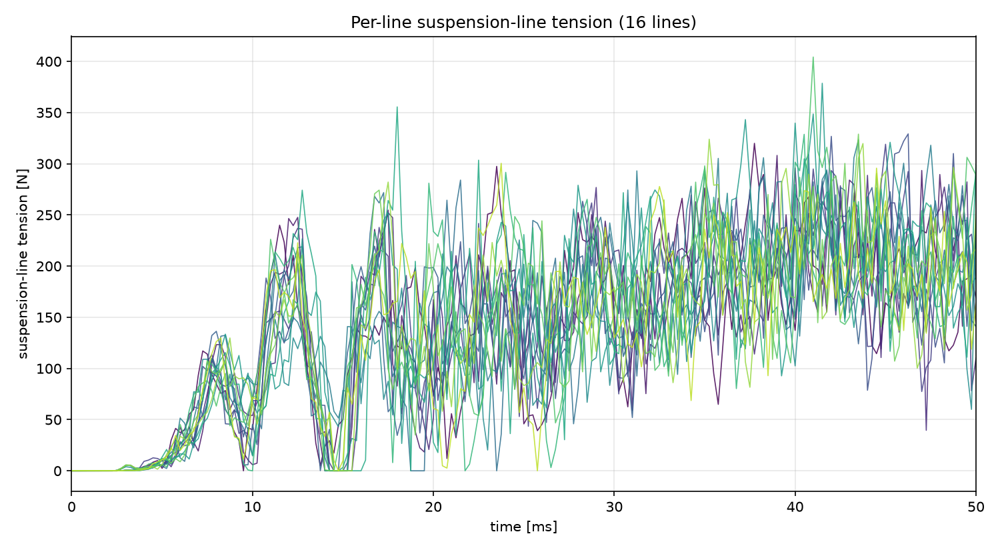
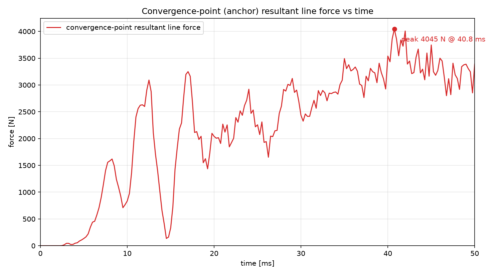
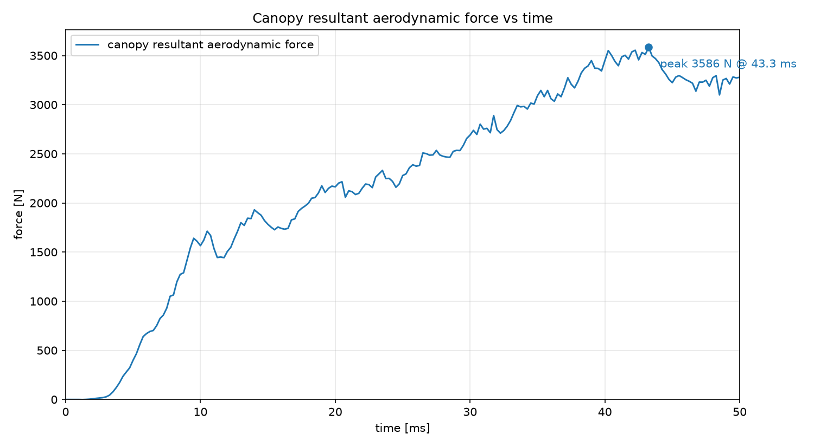
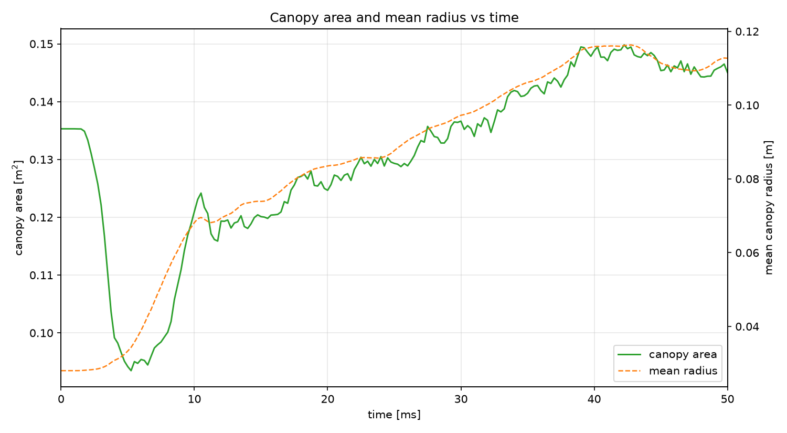
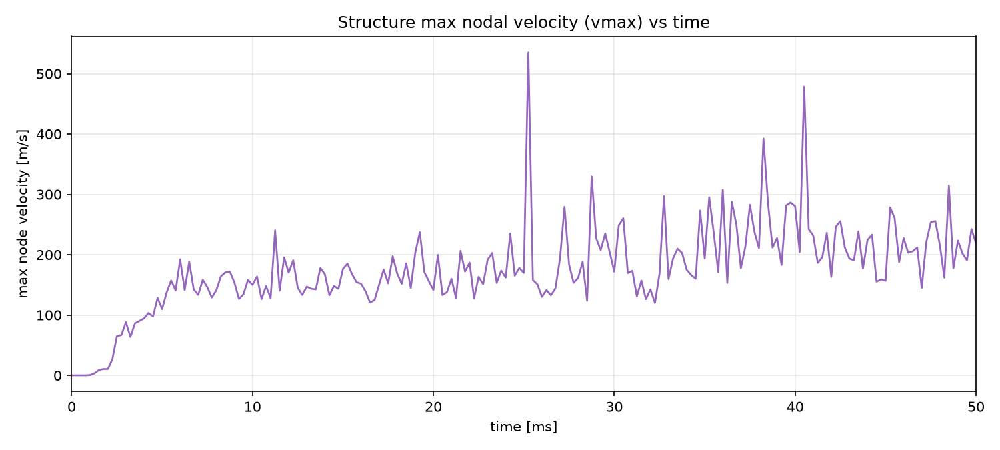
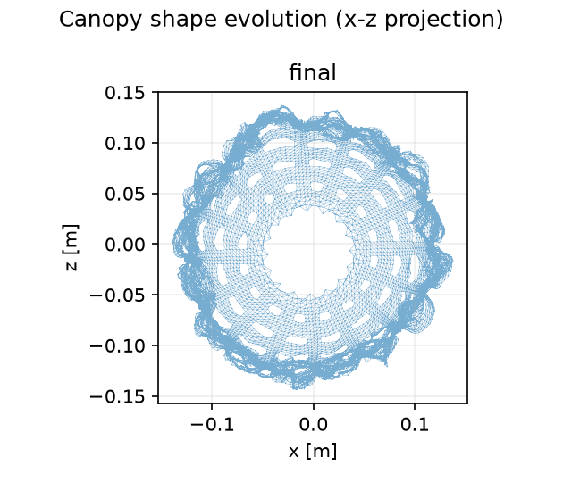
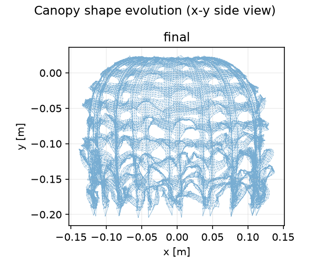
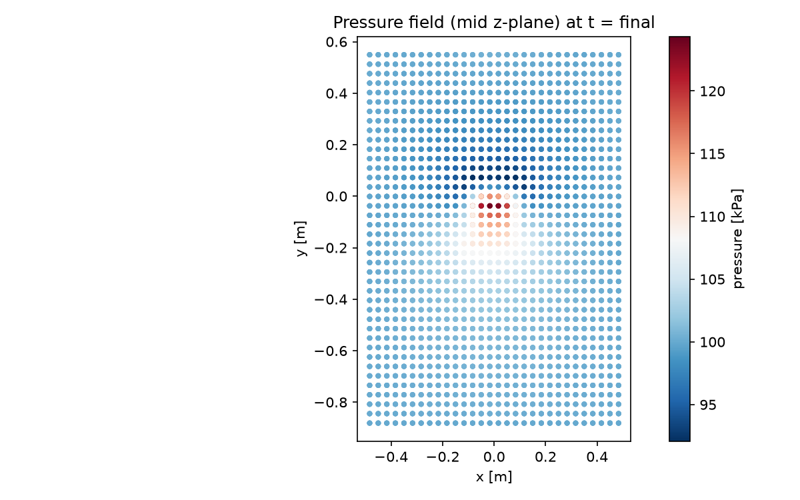
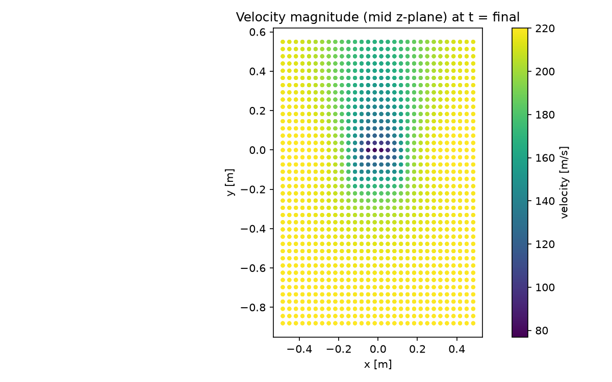

减速伞展开过程数值计算报告
生成时间: 2026-11-05 16:03:12 |
结果目录: /workspace/T5E_R05_y1ext04_pleak01_50ms/results
peak canopy force 3586 N @ 43.3 ms peak line force 4045 N @ 40.8 ms final area 0.145 m² final radius 0.113 m
1 计算条件
(Conditions not available — run the report from inside the solver to populate this section.)
2 计算资源与用时
CPU model: INTEL(R) XEON(R) PLATINUM 8582C
physical cores: ? logical cores: ?
base frequency: ? GHz
3 伞绳力与汇聚点受力时程曲线

Per-line suspension-line tension vs time

Convergence-point resultant line force vs time
原始数据见 data/ 目录下的
.dat 文件（列：时间 ms，力 N）。
4 伞衣气动力、面积与速度时程

Canopy resultant aerodynamic force vs time

Canopy area and mean radius vs time

Structure max nodal velocity (vmax) vs time
5 伞衣形态变化

Canopy shape evolution (x-z projection)

Canopy shape evolution (x-y side view)
6 流场云图（速度 / 压力）

Pressure field (mid z-plane, final state)

Velocity-magnitude field (mid z-plane, final state)
7 伞衣应力 / 应变云图
8 数据文件说明
data/*.dat — 所有曲线的原始数据（空格分隔，首行为列名注释）figures/*.png — 报告中所有图片figures/canopy_inflation.mp4 — 展开过程动画history.csv — 完整时程历史line_force.csv — 逐伞绳张力时程state_*_fluid.vtk / *_structure.vtk — 各时刻流场/结构 VTK